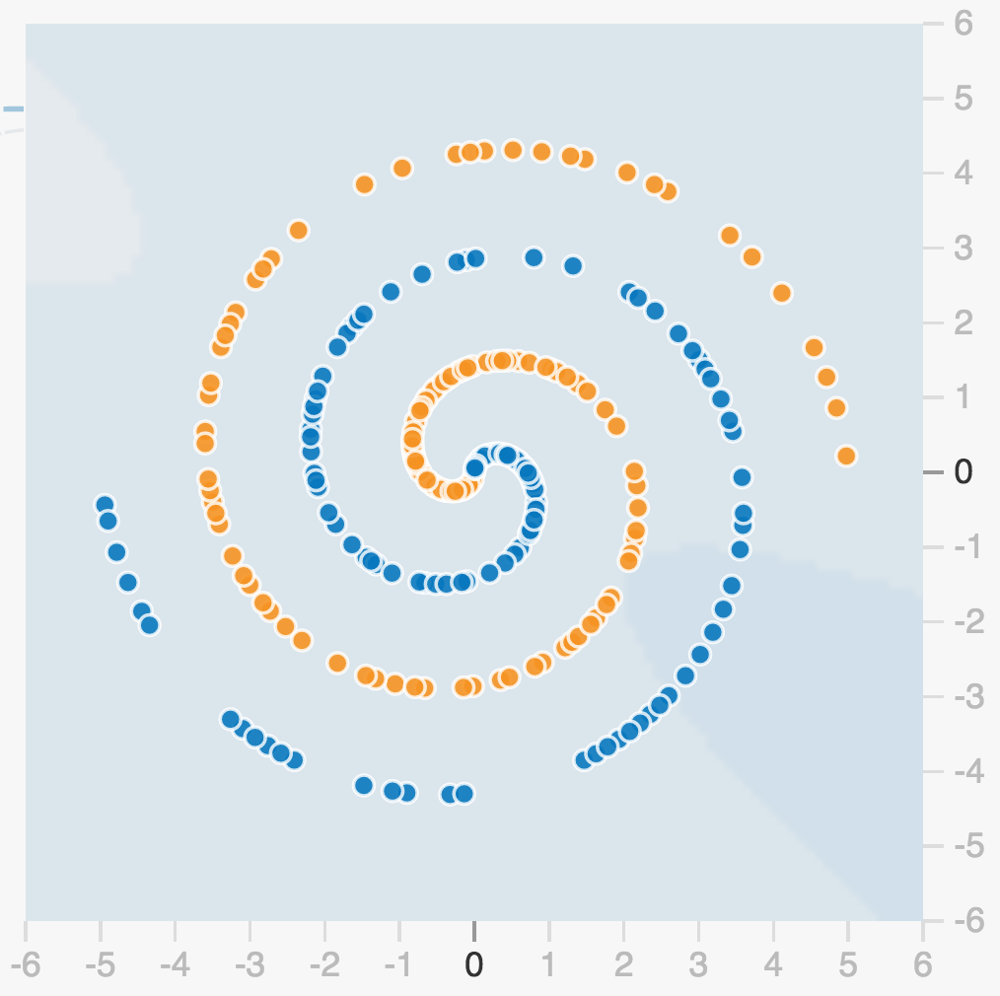

발표 후기 1
Functional Programming 그게 뭐죠?
함수
- 절차지향
- subroutin
- functional
- 수학에서 말하는 함수
Why? Functional Programming
동시성 무어의 법칙이 깨진후 CPU제조업체가 멀티 코어 성능 향상을 꾀함.
간결 expression의 조합 고민해야할 문제가 하나로 줄어듬. oop의 단일책임원칙이 자연스럽게 적용됨. 동일 입력값이 동일 출력값으로
테스트 값을 직접입력하지 않아도 테스트 프레임워크가 자동으로 생성도 가능
재미!!!
맛보기
과거 함수형 프로그래밍 언어는 느려서 못썼는데 요새는 속도가 빠름.
haskel 샘플
let add :: Int -> Int -> Int
add a b = a + b
(파라메터) (리턴타입) Int ->Int -> Int
함수형언어들은 함수 우선권을 가짐 add 2 5 * 3 => 21
1.toString()
==> error
1.toString
==> "1"
자바에서의 1은 primitive type scala에서의 1은 object => PURE object oriented programming language
Full-blown Functional Language => 순수 함수형 언어가 아닌 함수형 프로그래밍하기에 적합한 언어를 지칭 => 스칼라가 이 범위에 있음.
호주 이민은 스칼라
kevin github -> functional transaction without aop
발표 후기 2
Machine Intelligence at Google Service
What we’ll cover what is neural network and deep learning machine learning use cases at google services externalizing the power of ML tensorFlow: the open source library for ML tensorFlow in the wild ??
What is Neural Network and Deep Learning
Neural network is a functio that can learn -> 고양이의 이미지를 분석해서 레이블을 만듬. -> 이러한 기술을 게임서버에서 로그를 분석해서 악성행위 분석 가능

나선 이미지를 보면 오렌지, 블루 색상을 사람은 쉽게 알 수 있음
하지만 컴퓨터는… 점마다 위치정보를 if-else하는 프로그래밍은 괴로움. -> 이러한 문제를 해결하기 위해 ML사용
Neural network traning play ground - site sample
- site에서 패턴인식하는게 실시간으로 나와서 파란색과 오렌지색을 인식하는것을 볼 수 있음
- 더 많은 데이터와 더 많은 샘플을 주면 더 빠르고 더 정확하게 데이터를 학습함.
- 한레이어에서 나오는 아웃풋을 그 다음 레이어의 인풋으로 제공해서 더 스마트헤거 됨.
- 각각의 레이어는 단순하지만 이 것들이 통합하면서 스마트한 뉴런네트워크가 됨.
=> 사람이 이미지를 어떻게 인식하라고 알려주지 않아도 알아서 하는 것이 중요
=> AI, AlphaGo가 이세돌을 이길수 있었던것.
=> 컴퓨터가 스스로 방법을 찾아내기 때문에 사람보다 뛰어난 방법을 찾아낼 수 있는 것.

고양이 인식
=> 고양이를 인식하기 위해 50개 이상의 레이어가 생성되고, 각각의 레이어(뉴런)은 단순 하지만 모이면 스마트해지면서 컴퓨터가 이미지상에서 고양이를 판별할 수 있게됨.
machine learning use cases at google services
구글 검색을 통해 이를 사용하고 있음 최근에 구글은 랭크브레인이라는 서비스를 내놓음 Image를 컨텐츠에 따라 구분하는 google photo gmail - smart reply in box mobile - 이메일을 자동으로 전송. google translate with neural machine translation data center - energy save More…. 60개 이상의 프로덕트에 사용
externalizing the power of ML
ML api는 머신러닝과 상관없는 개발자가 사용하도록 제공하려함.
- CoudVision API 이미 트레이닝된 모델을 제공하기 때문에 이미지가 인풋되면 바로 결과가 나옴. 8만개 이상의 이미지를 이용해서 서비스를 사용. 사진을 주면 다양한 레이블 정보를 줌 (0_0 데모 우와~~)
- WebSpeech Api google.com/speech
tensorFlow: the open source library for ML
자신의 뉴럴네트워크를 구축하고 싶을때 사용하는 오픈소스 Portable and Scalable
tensorFlow in the wild
일본의 예를 보여줌. 어머니는 오이를 하루 8시간씩 골라내는 일을 함. 스스로 텐서플로우로 오이 분류기를 만듬. embedded software 개발자로 머신러닝을 모르는 사람이지만 함!!! 현재 70%의 정확성으로 오이를 9개의 등급으로 나눌수 있다.
치킨너겟을 서빙하는 로봇 팔.
드론으로 트럭의 갯수를 세는 것.
Distributed training and prediction in Computing power(?)
컴퓨터 파워가 엄청 필요함. GPU가 있어도 몇주가 걸리기도 함.
구글 클라우드가 수십만개의 GPU 클러스터를 가짐.
jupitor network tensor processiong unit
=> 40배 ~ 300배 성능 향상 가능
발표 후기 3
스칼라로 웹사이트 개발하기
- 라스칼라코딩단, 최정열 & 케빈리
=> 라이브 코딩(작성 못함. T-T)
- 나프다 동영상 참조. 시연신이 나오셔서 방해를 엄청하심;;
발표 후기 4
MS는 Rx를 왜 만들었을까? feat. RxJS
- 네이버, 김훈민
Rx는 어디에서 왔을까?
volta project에서 시작 -> live labs 다양한 기술을 하나의 플랫폼에서 실행 GWT과 비슷하지만 많은 플랫폼과 대응하는게 목적. -> volta 프로젝트는 좌초됨.
volta => Reactive Framework를 가져와서 => .Net의 Reactive Extenstion
- 2009.11.17 Rx.NET 릴리즈
- 2010.03.17 RxJS
- 2012.11.06 오픈소스 공개 Rx.NET, RxJS, Rx++
- 2013.02.05 RxJava by Netflix

2 Rx를 지탱하는 키워드
Reactive Programming 데이터 플로우와 상태 변경을 전파한다는 생각에 근간을 둔 프로그래밍 패러다임.
1985 - on the development of reactive systems => 논문에 reactive란 용어 시초라고 봄.
- 반응 자극은 밖에서 안으로 흐름 자극이 있어야만 반응하는 수동성

iterator pattern - pull observalbe pattern - push
iterator - observable 쌍대 관계에 있다. -> slide의 설명문을 보면 @_@ => A와 B의 본질이 같다.
메서드표 자료 참조
- LINQ to Events 이벤트와 LINQ의 개념을 결합한 오퍼레이터(Operator) 제공 Language Intergrated Query 에릭마이어가 만든 통합 질의 언어 C# 3.0부터 등장 데이터 질의 문법 설탕 두가지 스타일을 지원
- Query syntax
Method syntax
Scheduler 비동기 환경에서 오퍼레이터 실행 시점 제어
RP와 FRP의 경계에서
RP != FRP
FRAN(Functional Reactive Animaton)1997 - 표현과 모델링의 분리 -> 시간에 따라 변하는 값을 표현(Behavior) -> 함수형 리액티브 프로그래밍의 시작
Evan Czaplicki - Elm만든 사람. Controlling Time and Space -> FRP 다양한 변종들 설명.
FRP 번위를 간단히 좁히면 (FRAN 논문 저자 왈) 1. denotational : 연속하는 시간에 따라 변하는 값이 1급 시민으로 표현되어야함. 2. countinuous-time
개념적인 FRAN, 실질적인 Rx불연속값 처리 스트림 결합시 일괁성 없는 동시 이벤트 처리 발생 단점 -> 구성성 결여
rx는 순간 불일치(glitch) 생김 => 진정한 FRP 구현체라고 보기 힘들어함.
제대로된 reactive를 보고 싶으면 ‘reactive-banana’ 라이브러리 참조. => FRP 설명을 하스켈로 설명.
웹프론트엔드, 그리고 RxJS
뷰와 상태의 동기화 문제를 프레임워크마다 푸는 방식 backborn - KVO(key-value observing) => 데이터 변경 체크 까지만 프레임워크 뷰의 상태 변화는 개발자가(MVC) angular - 양방향 databinding => 속도 문제 발생 reactjs - virtual dom - 상대가 변경되면 뷰가 바낌. flux - react는 view만 담당. 순수 함수 조합 단방향 데이터 플로우 MVI(Model-view-intent) 순환 스트림 설계 함수형 프로그래밍.
- Reactive
- Functinal
Rx는 FE 개발자에게 좋은 자극제
Elm에서 영감을 얻은 Redux, Cycle.js 다른 진영 또는 클래식한 기술에서 새로운 통찰을 경험.
발표 후기 5
‘스타트업 1인 개발 극복기’와 ‘javascript vs Scala, (함수형 언어 관점으로)방황기’
- I/O Inc, 박미정
왜 함수형 언어?
- 개인
- 성장욕구
- 높은 추상화
- 코드 신뢰성
- …
- 회사
- 시간적 여유
- …
‘코드 신뢰성’ -> 적은 코드가 적은 버그를 만들어낸다.
어떻게 팀에 도입을?
매주 sw 세미나 -> (관심끌기 성공) -> 함수형 패러다임 도적 -> 프로덕션 적용 시작
‘관심끌기 사례’ - > 같은 입력 같은 출력 (사이드이펙트가 없으니) TDD시에 상당히 자연스럽게 연결.
어떻게 팀에 도입을?
함수형 언어에 등장하는 ‘특성들’을 ‘기존 제품의 서버에 적용’ 해보고 함수형 패러다임의 ‘매력’을 멤버들과 동기화
왜 Scala
함수형 프로그래밍 언어 -> side effect 없는 프로그래밍을 지원하고 장려하는 언어
scala oop+fP 다리역할 -> 멤버들이 oop에 익숙한 상태에서 fp를 자연스럽게 넘어갈때 !!
#(2번째 주제) 스타트업 1인 개발 극복기 슬라이드참조